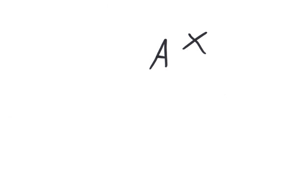
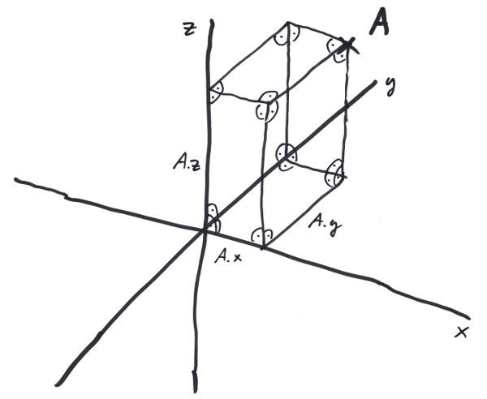
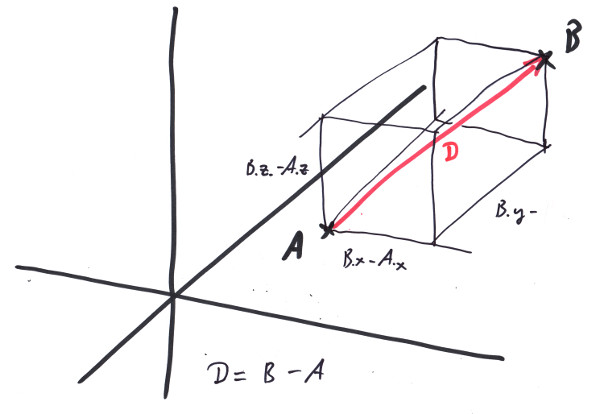
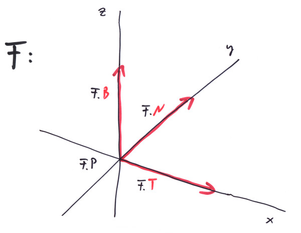
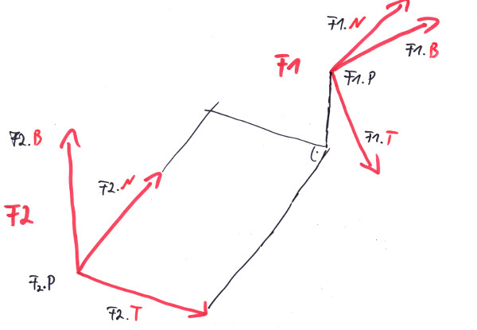

"There is no short cut to geometry."
- Euclid
Take a deep breath and let us contemplate an empty three dimensional euclidean space; it consists of an abundance of so called 'points', which maintain some idea of relationship to one another. For example if two points are different, they define a line and if a third point is not also part of that line these three define a plane, all being subsets of points of the total space.[1],[2] It roughly looks like this:
I took the liberty to mark a point and name it 'A'; imagine the third dimension coming out of the screen. Doesn't look like much, does it? But make no mistake, it is the place where we will build the most fancy railroad systems. From a programmer's standpoint we want to bring a bit of order into this wilderness, so the first thing we should do is to address these points. Since we can not give names to all of them, we introduce a cartesian system of coordinates, by making three lines, called axes, which intersect in one point, in a way that every two of them form right angles. In general, every two intersecting lines form two angles, if these happen to be the same - what can be found out by moving the lines in the plane they define - then this angle is a right one:
Note all the right angles: the orthogonal projections onto the three axes x, y, and z form some kind of address, so that we can not only address A, but also any other point by using three numbers. The spatial library provides a struct for that: 'Position'.
using namespace trax;
Length ax = 4_m;
Length ay = 5_m;
Length az = 6_m;
spat::Position<Length> A = {ax,ay,az};
assert( A.x == ax && A.y == ay && A.z == az );
std::cout << A << std::endl;
// prints: Position{ 4m, 5m, 6m } [3]
Leave no doubt what we are talking about, use our dimensionated value 'Length' (see Chapter 1), so we get some 'dimensionated cartesian coordinate system', that we tend to call 'Frame'. The very special point at the center we give a name of its own: spat::Origin3D<Length>. If we pick a second point, B, we now can tell something about their relationship: first as the axioms for the euclidean space guarantee: they define a line. Secondly we get the distance D between A and B by subtracting A from B:
spat::Position<Length> B = {6_m,7_m,8_m};
spat::Vector<Length> D = B - A;
assert( D.dx == B.x - A.x && D.dy == B.y - A.y && D.dz == B.z - A.z );
std::cout << D << std::endl;
Length d = D.Length();
std::cout << d << std::endl;
// prints: Vector{ 2m, 2m, 2m }
// 3.46m
As the assertion shows, that means subtracting the components of the Positions respectively. We get the distance D to be a new type 'Vector<Length>', that has three components also: dx, dy, and dz which are the distances with respect to the single coordinate axes x, y and z:
With the Pythagorean theorem, we can see that the length of the vector D is:
d² == (dx² + dy²) + dz²;
-> |D| == d == sqrt( dx² + dy² + dz² );
We now also can define the addition of vectors, because if we have the points A, B and C with Vector<Length> D1 = B - A being the distance between A and B and Vector<Length> D2 = C - B being the distance between B and C, it turns out that D3, the distance between A and C is:
using namespace spat;
Vector<Length> D3 = C - A
== {C.x,C.y,C.z} - {A.x,A.y,A.z}
== {C.x-A.x,C.y-A.y,C.z-A.z}
== {C.x-B.x+B.x-A.x,C.y-B.y+B.y-A.y,C.z-B.z+B.z-A.z}
== {D2.dx+D1.dx,D2.dy+D1.dy,D2.dz+D1.dz}
== {D2.dx,D2.dy,D2.dz} + {D1.dx,D1.dy,D1.dz}
== D2 + D1;
if we add a vector to itself:
Vector<Length> V;
V + V == {V.dx+V.dx, V.dy+V.dy, V.dz+V.dz}
== {2*V.dx,2*V.dy,2*V.dz}
== 2*{V.dx,V.dy,V.dz}
== 2*V;
by induction we find a plausible recipe for multiplication of a vector with a scalar value s:
One s = 2;
Vector<Length> W == s * V;
for Vector addition and scalar multiplication there are C++ operators defined in namespace 'spat'. Please calculate in the above way that for these operations the usual laws for calculation with additions and multiplications transfer (e.g. s*(V+W) = s*V+s*W ).
It is important to note that we very well might have used a different coordinate system. We drew this one arbitrarily and might have picked three very different lines that cross orthogonally in a very different point. The points A, B, C would have stayed the same. Even the distance vectors and their lengthes wouldn't have changed. What would have changed would be the addresses of the points, e.g. the parameters A.x, A.y, A.z of A, or the V.dx, V.dy, V.dz of V. Hence in a different coordinate system the above calculations would produce the same results. It would be all too funny, if the length d of a distance D between two points A and B would depend on our arbitray choice of a coordinate system, which is nothing else than how we apply our rulers.
For some studied people it comes as a surprise that there is no operator+ defined for positions, yes it seems overly odd to have two different types defined for points and distances after all. Many libraries do well with just using a vector type and use it for describing points also. But think about it for a minute: what geometrical sense would it make to add up two points in euclidean space? There is no such thing as a geometric notion for it, without relating to a special coordinate system, so all the calculations would be valid in one coordinate system only and that is what we try to avoid. There are situations, where you want to relate to a special 'center point' which might have physical - and therefore geometrical - meaning. But then you actually consider the differences from points to that center. And that would be Vectors.
Nevertheless is there a connection between Position and Vector. You might subtract two Positions from each other and get their difference Vector as seen above. Also you can add a Vector to a Position and get another Position:
Position<Length> B = A + V;
this will yield another position B, _m(|V|) meters away from A in the direction of V. But let us do this kind of calculation a little bit differently: as it will show in the next section of this chapter we want to do multiplications on vectors; this will notoriously yield squared meters as the units of our results if we start with Vector<Length>. So as a convention we want to map a position to another by:
Vector<One> U = Ex<One>;
Length s = 2_m;
Position<Length> B = A + s * U;
With U typically being a unit vector (a vector of length 1) - making it technically speaking a 'unitless unit vector' of which we better say it to be a 'unit vector of dimension one'. Thatway we keep the unit and the length in the scalar, but the direction in the vector. Note that s*U is actually of type Vector<Length> again.
In Vector.h we provide a spat::Normalize - function to dismantle a Vector into a std::pair of a dimensionated scalar and a unit Vector of dimension One.
In this sense the following vectors V, W, R, S are of type Vector<One>.
Is it possible to multiply two vectors? Can we write V*W? Do we even want to? Well, as it turns out there are plenty of possible definitions of such a multiplicative operation, some even more nonsensical than others. First of all we want a geometrical meaning to be connected with it, so that it can be usefull. A definition like V * W = { V.dx*W.dx, V.dy*W.dy, V.dz*W.dz } = V3 would be one of the more nonsensical ones, because if we would multiply a vector by itself, it would be V * V = {V.dx²,V.dy²,V.dz²}, which in general would not even have the same direction of V, but would go somehow paraboloid in the axes. Even worse, if we would use a coordinate system, in which the very same Vector V happens to lay along the x-axis, the resulting vector would be parallel to V all of a sudden, while in some other coordinate system it ain't. If we would rely on such kind of calculations, every result would be valid in one coordinate system only, so we would never by able to figure out, e.g. wether two lines are parallel, since they are parallel for geometrical reasons and not because of our choice of a coordinate system or wether we exploded on the shoulder of Orion.
In the same way that we do not want our tank to be full only if we counted in gallons but not in liters (see Chapter 1), we want the results of our operations on Positions and Vectors to be invariant from the choice - or change - of our coordinate system. That shrinks the possible choices for a multiplication recipe quite a lot, but unfortunately not so much that we would be left with a finite number of possibilities. As it turns out from experience, there are lots of reasonable possibilities to define vector multiplications, but in geometry two of them turned out to be more usefull then some others:
The so called scalar product:
V * W == V.dx*W.dx + V.dy*W.dy + V.dz*W.dz;and the so called cross product:
V % W == { V.dy*W.dz - V.dz*W.dy, V.dz*W.dx - V.dx*W.dz, V.dx*W.dy - V.dy*W.dx };note that the first one produces a scalar value, the second a vector again. Why are they so usefull in geometry? Now, first of all they produce results independent from the Frame selected to calculate them. Believe me, I tried: if not so, all my trains would derail and you'll see for yourself, that they derail only on purpose. Secondly they have interesting geometrical meaning. Take the scalar product and calculate it in a Frame where both vectors lay in the x/y plane and V is parallel to the x - axis.
V * W == V.dx*W.dx + V.dy*W.dy + V.dz*W.dz
== |V|*W.dx + 0*W.dy + 0*0
== |V|*W.dx
== |V|*|W| * W.dx/|W|;
From the image you see that W.dx/|W| actually equals cos(a) with 'a' being the angle between the two vectors. So that we get:
V * W == |V|*|W| * cos(a);
this proof might look like fraud, but I assured you, this calculation in a special Frame shouldn't dare not to produce the same result as in any other cartesian coordinate system (at least I bet the correct railing of all my trains on it). Note that the result does not depend from any coordinate component any more, but only from the lenghtes of the vectors and the angle between them, and this is what I call 'geometrical meaning'.
What's the geometrical meaning of V % W? Let's try the same trick:
V % W == { V.dy*W.dz - V.dz*W.dy, V.dz*W.dx - V.dx*W.dz, V.dx*W.dy - V.dy - W.dx }
== { 0*0 - 0*W.dy, 0*W.dx - |V|*0, |V|*W.dy - 0*W.dx }
== {0,0,|V|*W.dy}
== |V|*|W| * {0,0,W.dy/|W|};
from the image you see that W.dy/|W| actually equals sin(a) with 'a' being the angle between the two vectors. So that we get:
V % W == |V|*|W| * {0,0,sin(a)} = |V|*|W| * sin(a) * {0,0,1};
the only thing in this formula that actually has no geometrical meaning is {0,0,1}, the Ez unit vector. If you would do this calculation in a Frame so that V, W are in the y/z plane and V is parallel to the y axis, then the result would be the same, only that this vector becomes {1,0,0}. The geometrical meaning of this vector is to stand orthogonal on the plane that V, W define! We are on a little bit bumpy road here, but by induction we conclude:
V % W == |V|*|W| * sin(a) * E_orthogonal;
again, if this shouldn't hold, my trains should derail on a regular basis. For the direction of E_orthogonal the right hand rule holds: if the thumb of your right hand points to V and your index finger to W, then your middle finger wants to point along E_orthogonal.
These two operations follow the usual rules of combining addition and multiplication, e.g (V + W) * (R + S) = V*R + V*S + W*R + W*S etc., but with one exception: the cross product is not commutative, actually it holds:
V % W == - W % V;
please proof this by calculating from the components and note how the right hand rule really applies. Also note that if V and W are parallel:
V * W == |V| * |W|;
V % W == Null<One>;
and that if they are orthogonal it holds:
V * W == 0;
V % W == |V| * |W| * E_orthogonal;
in particullar the multiplications of a vector with itself have the following properties:
V * V == |V| * |V|; // ->
|V| == sqrt(V*V);
V % V == Null<One>;
there are some additional vector products that get used in calculations quite often:
The triple product:
V * (W % R) == W * (R % V) == R * (V % W);
the vector triple product:
V % (W % R) == (V * R) * W - (V * W) * R;
Lagrange's identity:
(V % W) * (R % S) == (V * R) * (W * S) - (V * S) * (W * R);
you might want to proof the correctness of these relations.
Let us redefine our 'coordinate system' a little bit and make clear, what we understand under a 'Frame<Length,One> F:
The Frame maintains a Position of dimension 'Length' and three Vectors of dimension 'One'. The F.P == Origin3D<Length> is the origin in which our three lines crossed; the F.T == Ex<One> is a vector of unit length and together with F.P defines the x-axis as all the points that can be described as:
Position<Length> P(s) = F.P + s * F.T;
for all s from Length. Similar definitions can be made for the two other axes and the Frame's F.N and F.B. A Position P can then be written as:
Position<Length> P = F.P + P.x * F.T + P.y * F.N + P.z * F.B;
We occasionally talked about the arbitrariness of the selection of a specific Frame? So let's assume we have a Position P = { P.x1, P.y1, P.z1 } formulated in a Frame F1. What would P be in a second Frame F2? First answere would be: P of course, the same Position P, where we might have left our mark on, like in image 1. So let's be precise: what coordinates would P = { P.x2, P.y2, P.z2 } have in F2? The above equation depends from the coordinates in F1:
Position<Length> P = F1.P + P.x1 * F1.T + P.y1 * F1.N + P.z1 * F1.B;
but we can evaluate it in the Frame F2, if we know the F1.P, F1.T, F1.N, F1.B in F2!
To make this point clear, let us write the calculation independent of our Position/Vector calculus. If we remember what we always wanted to know about matrix multiplication, but were afraid to ask, we can write this as a multiplication of a 4x4 matrix with a 1x4 matrix (multiply the rows by the columns elementwise and add the results up):
(P.x2) ( F1.T.dx2, F1.N.dx2, F1.B.dx2, F1.P.x2 ) (P.x1)
(P.y2) = ( F1.T.dy2, F1.N.dy2, F1.B.dy2, F1.P.y2 ) * (P.y1)
(P.z2) ( F1.T.dz2, F1.N.dz2, F1.B.dz2, F1.P.z2 ) (P.z1)
( 1 ) ( 0, 0, 0, 1 ) ( 1 )
If we would have evaluated this in F1, it would have read:
(P.x1) ( 1, 0, 0, 0 ) (P.x1)
(P.y1) = ( 0, 1, 0, 0 ) * (P.y1)
(P.z1) ( 0, 0, 1, 0 ) (P.z1)
( 1 ) ( 0, 0, 0, 1 ) ( 1 )
Which is correct. Let's call this Matrix TM12, since it translates the components of a P from F1 to F2, so from so called homogenous coordinates PH1 to PH2. Thus we can write:
PH2 = TM12 * PH1
We happen to have a matrix class Transformation with all the operators in Matrix.h, that does just that. In the same line of thinking, we find out what the transformation of the vector components is:
(V.dx2) ( F1.T.dx2, F1.N.dx2, F1.B.dx2 ) (V.dx1)
(V.dy2) = ( F1.T.dy2, F1.N.dy2, F1.B.dy2 ) * (V.dy1)
(V.dz2) ( F1.T.dz2, F1.N.dz2, F1.B.dz2 ) (V.dz1)
{V.dx2,V.dy2,V.dz2} = M12 * {V.dx1,V.dy1,V.dz1}
This 3x3 matrix M12 is simply given by the components of the three vectors of F1 as formulated in F2. The so called transposed matrix, Transposed(M12) is given by exchanging the rows with the columns of a square matrix, making the rows form the vectors, not the columns. The following calulation:
Transposed(M12) * M12 ==
( F1.T.dx2, F1.T.dy2, F1.T.dz2 ) ( F1.T.dx2, F1.N.dx2, F1.B.dx2 ) ( F1.T*F1.T, F1.T*F1.N, F1.T*F1.B ) ( 1, 0, 0 )
( F1.N.dx2, F1.N.dy2, F1.N.dz2 ) * ( F1.T.dy2, F1.N.dy2, F1.B.dy2 ) = ( F1.N*F1.T, F1.N*F1.N, F1.N*F1.B ) = ( 0, 1, 0 )
( F1.B.dx2, F1.B.dy2, F1.B.dz2 ) ( F1.T.dz2, F1.N.dz2, F1.B.dz2 ) ( F1.B*F1.T, F1.B*F1.N, F1.B*F1.B ) ( 0, 0, 1 )
== E;
with E being the unit matrix, shows that for such kinds of transformation matrix it is Transposed(M12) == Inverse(M12) == M21, with the inverse being the one matrix that reverses the transformation:
{V.dx2,V.dy2,V.dz2} == M12 * {V.dx1,V.dy1,V.dz1}
M21 * {V.dx2,V.dy2,V.dz2} == M21 * M12 * {V.dx1,V.dy1,V.dz1}
{V.dx1,V.dy1,V.dz1} == M21 * M12 * {V.dx1,V.dy1,V.dz1}
--> M21 * M12 == E
--> M21 == Inverse(M12)
By the way, with this calculus at our fingertips we can proof that our scalar multiplication is independent from the choice of a Frame, since:
V * W ==
== {V.dx1, V.dy1, V.dz1} * {W.dx1, W.dy1, W.dz1}
== M21 * {V.dx2, V.dy2, V.dz2} * M21 * {W.dx2, W.dy2, W.dz2}
== {V.dx2, V.dy2, V.dz2} * Transposed(M21) * M21 * {W.dx2, W.dy2, W.dz2}
== {V.dx2, V.dy2, V.dz2} * Inverse(M21) * M21 * {W.dx2, W.dy2, W.dz2}
== {V.dx2, V.dy2, V.dz2} * E * {W.dx2, W.dy2, W.dz2}
== {V.dx2, V.dy2, V.dz2} * {W.dx2, W.dy2, W.dz2}
The fact that we have a Frame F1 formulated in terms of F2, we often call as F2 being the parent frame of F1, so that several Frames might build whole hierarchies of those relationships, with grandparents and siblings. In Frame.h we provide plenty of operators, so one can write e.g: V = F * V, to get V from the Frame F it is formulated in to be formulated relative to the parent of F. To make this easier to remember and less error prone, the Frame provides methods called 'ToParent()' and 'FromParent()', that transform Vectors and Positions to or from their parents respectively.
Be sure, never to mix up Vectors or Positions that are formulated with respect to different Frames in the same vector equation. Note that we would'nt call V = F * V a vector equation, nor our transformations and matrix operations. A vector equation would be something like this:
Vector<Velocity> V0{ 100_mIs, 200_mIs, 0_mIs};
Vector<Acceleration> G{ 0_mIs2, 0_mIs2, -9.81_mIs2 };
Time dt = 3_s;
Vector<Velocity> V = V0 + G * dt;
With V ending up to be formulated in the same Frame as V0 and G.